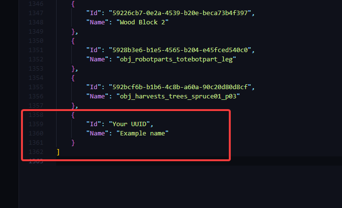

Scrap Mechanic CraftBot Recipe Creator (Editor)
1. Choose or create a new .json recipe
2. Create or edit an existing recipe
3. Right-click on the ID field to choose an object instead of typing it slowly
TO ADD YOUR OWN ITEMS
↓ ↓ ↓ ↓ ↓ ↓ ↓ ↓ ↓ ↓ ↓ ↓ ↓ ↓ ↓
1. Go to sm-cbrc/craftables/craftables.json and add your own item
(This can be useful if you're making a recipe with custom items or items from mods)
2. Add a new object to it.
↓ ↓ ↓ ↓ ↓ ↓
